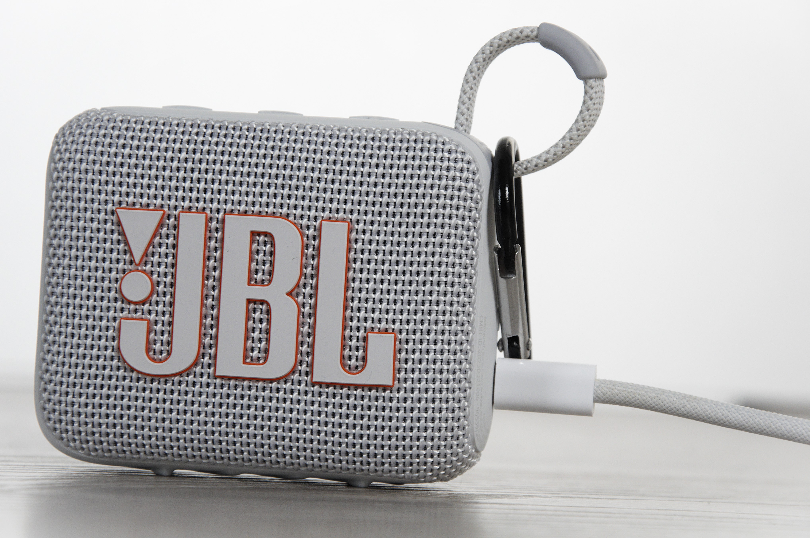

Test: JBL GO 4
26 of May 2025
The JBL GO 4 is a small factor speaker from JBL

It has a 7 hours battery life, and is IP67 so water and dust resistance. It charges via an USB-C port, and the charging time is around 3 hours. All of those information are from the official JBL website. Now time for my own test and experience, and are those affirmations true?
My first use was music in shower and "pocket music", I had previously a JBL BoomBox 1, and still have it. It's biggest flaws were the size and weight, so I wanted a smaller speakker that could be way more portable for my needs.


Let's talk about the design of the speaker, I choosed the white color but there are many colors available. The mesh design, is great, it pair quite nicely with a mesh USB-C cable, like the one from Apple or Ikea. And like always the mesh texture give a premium feel and is always nice to the touch !
For now, I know it is water resistant, I tested it in the shower, and it works great.
I didn't talked about the sound quality, at high volume we loose some bass, and sometimes the midle and high frequencies got a bit satured.
After tweaking and playing with the sound equalizer, I found a nice combo that works fie for my use.
It is still new, so I didn't had time to see if it last 7 hours, and if it takes 3 hours to recharge.
But I will use and update this article in the future.